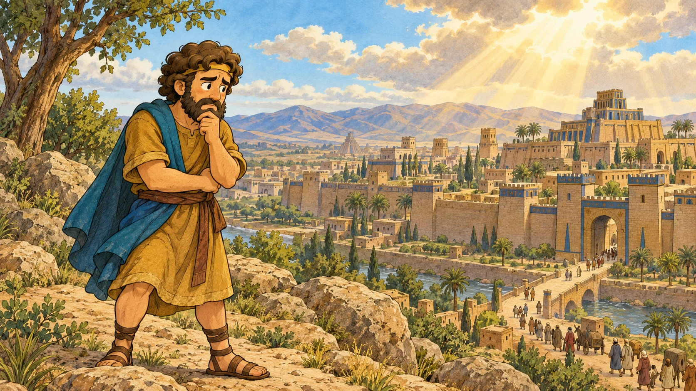

幼年班 2-3-5 ／ ヨナ書
第五課 逃げた預言者
ヨナの
ものがたり。
遠くへ逃げたヨナ。
大きな魚。そして、もう一度の一歩。
神様のあわれみを、いっしょに見つけよう。
10〜15分 ・ 6つのお話 ・ 6〜9歳

神様は、あきらめない。01 — 06THE JOURNEY
6つの絵でたどる、ヨナの旅
今日の聖句
しかし、わたしはあなたがたに言う。敵を愛し、迫害する者のために祈れ。マタイによる福音書 5章44節（口語訳）
幼年班 2-3-5 ／ ヨナ書
第五課 逃げた預言者
遠くへ逃げたヨナ。
大きな魚。そして、もう一度の一歩。
神様のあわれみを、いっしょに見つけよう。
10〜15分 ・ 6つのお話 ・ 6〜9歳

神様は、あきらめない。01 — 06THE JOURNEY
今日の聖句
しかし、わたしはあなたがたに言う。敵を愛し、迫害する者のために祈れ。マタイによる福音書 5章44節（口語訳）